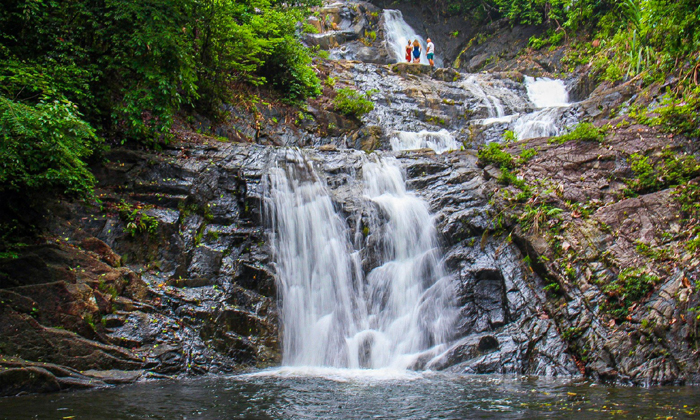

น้ำตกลำปี พังงา

น้ำตกลำปี น้ำตกสวย ของ พังงา ที่มีถึง 4 ชั้นด้วยกัน แต่ละชั้นก็จะไหลลดหลั่นกันลงมาอย่างสวยงาม โดยที่ชั้นล่างสุดนั้น จะเป็นอ่างน้ำธรรมชาติสามารถเล่นน้ำชิลๆ ได้เลย รวมถึงยังมี สะพานแขวนข้ามลำน้ำ ไว้ให้เราได้ถ่ายรูปสวยๆ กับป่าแบบกรีนๆ อีกด้วย ยังไม่หมดแค่นั้น เพราะยังมีรอยจารึกการเยี่ยมชมน้ำตกของจอมพล ป.พิบูลสงคราม ตอนปี พ.ศ. 2498 ที่อยู่บริเวณหน้าผาน้ำตกอีกด้วย แต่จะสามารถมองเห็นได้ในฤดูน้ำน้อยเท่านั้นนะคะ
ที่อยู่ :
อุทยานแห่งชาติเขาลำปี-หาดท้ายเหมือง ตำบลท้ายเหมือง อำเภอท้ายเหมือง จังหวัดพังงา